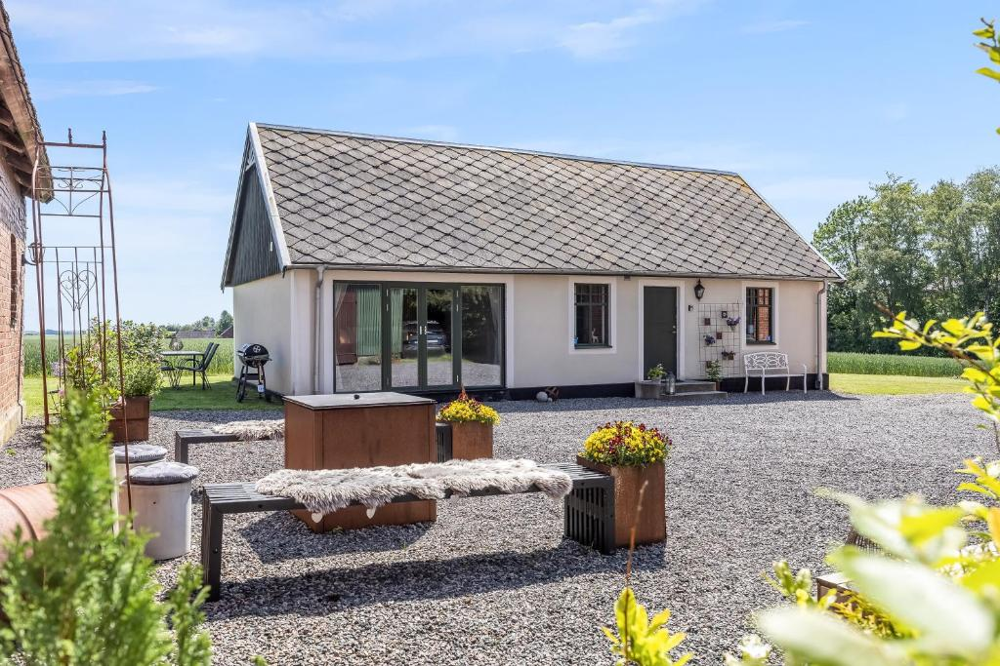
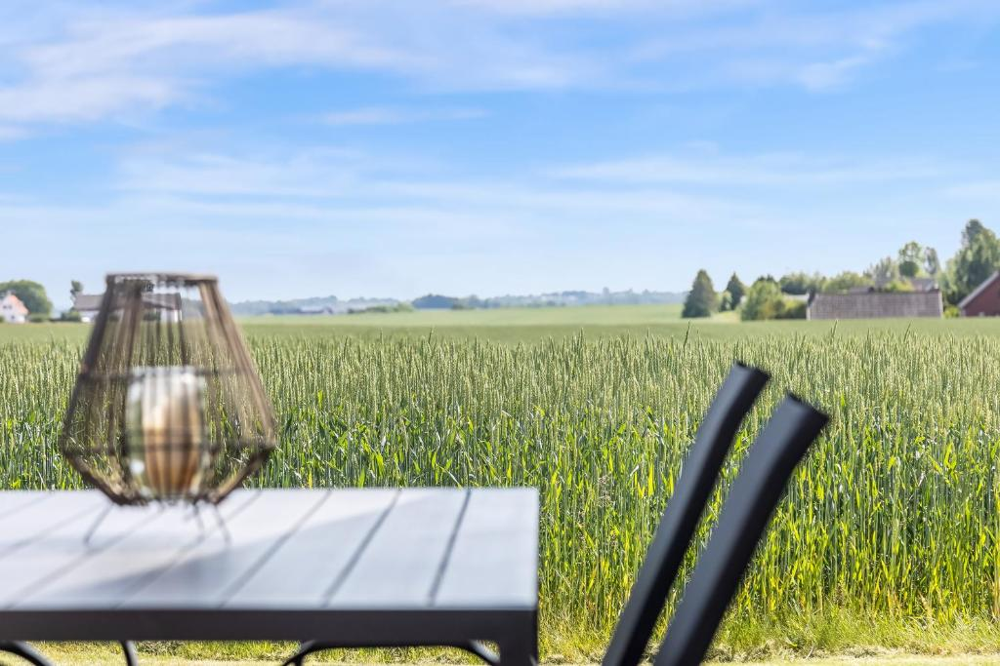

Studio med utsikt
Ett nyrenoverat rum på 20 kvm med öppet upp till nock, synliga balkar, parkettgolv och queensize-säng. Här finns även skrivbord, TV, soffa, fåtölj och rymlig garderob. Glaspartiet ger härligt ljus och vy över gårdsplanen.
Lantligt boende utanför Skurup
Ett lugnt och mysigt boende för 2-5 gäster + spädbarn, med utsikt över gård och åkrar, nära naturupplevelser, golf och badstränder.

Om boendet
Ett nyrenoverat rum på 20 kvm med öppet upp till nock, synliga balkar, parkettgolv och queensize-säng. Här finns även skrivbord, TV, soffa, fåtölj och rymlig garderob. Glaspartiet ger härligt ljus och vy över gårdsplanen.
Sovrum två är ett mindre rum med bekväm våningssäng, sängbord och mysig belysning. I tredje rummet finns enkelsäng samt köksdel med matbord för fem och barnstol vid behov.
Gäster har tillgång till kyl, mikrovågsugn, dubbel kokplatta, kaffebryggare, vattenkokare, diskmöjlighet och basutrustning för matlagning. Helkaklat badrum med dusch, handdukstork och hårfön för utlåning.
Vad boendet erbjuder
Bilder
Var du kommer att vara
Privat boende på landet med få grannar. Slimminge Bygdegård ligger cirka 150 meter från gästhuset. Här bor du lugnt med naturen nära, men med bra avstånd till stad, hav och aktiviteter.
Från Skurup går tåg till Malmö och Ystad varje halvtimme.

Värdar
Värdparet bor i huset intill och finns tillgängliga vid ankomst, avresa och frågor under vistelsen. Svarsfrekvens: 100%, vanligtvis inom en timme.
Språk: Svenska, English, Tyska (ein bisschen)
Boka på Booking.comHusregler